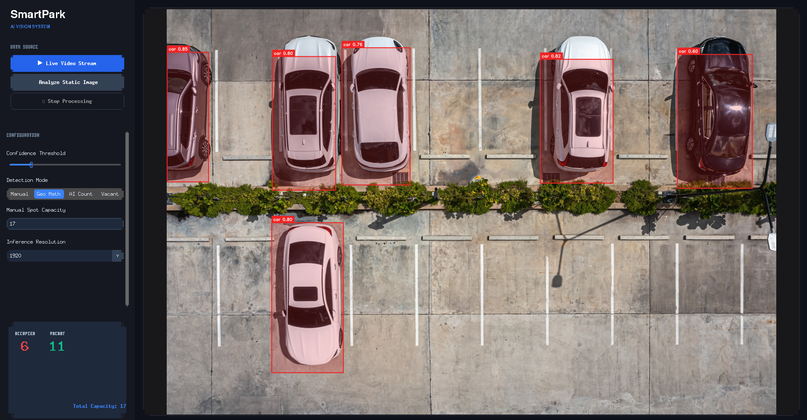
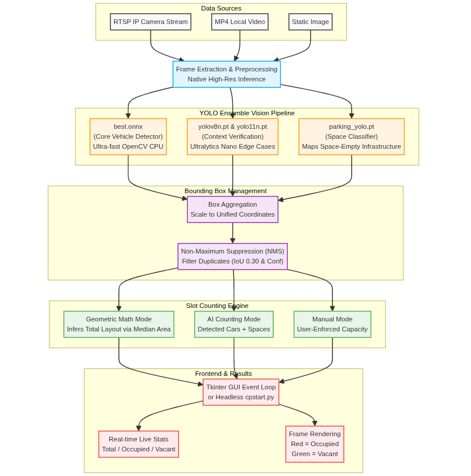

THE PROBLEM & SOLUTION
A state-of-the-art Computer Vision (CV) application for intelligent parking lot monitoring.

Monitors and calculates parking lot occupancy in real-time using modern AI pipelines.
BUILT WITH YOLO ENSEMBLE ARCHITECTURES
FOR INTELLIGENT PARKING MANAGEMENT
THE PROBLEM & SOLUTION
The system pulls a frame from the selected source (RTSP stream, video, or image). The frame is kept at its native high resolution (user-configurable up to 1920p) and fed into the active models.
Bounding boxes from the ONNX model and the YOLO models are scaled and translated into a unified coordinate space. To prevent duplicate detections, Non-Maximum Suppression (NMS) filters out overlapping duplicates based on the user-defined Confidence Threshold.
Finally, a specialized parking_yolo.pt model scans the remaining regions to confidently identify and flag space-empty locations, allowing real-time stat aggregation on the interactive Tkinter dashboard.
By fusing multiple YOLO versions, we achieve high-precision bounding boxes for dynamic slot counting.
OUTPUT SCREENS


The Smart Parking System processes RTSP camera feeds, local videos, and images to deliver highly accurate, automated parking slot tracking. The Tkinter dashboard allows for adjusting confidence thresholds, inference sizes, and monitoring live stats instantaneously.
KEY FEATURES INCLUDE

To ensure robust detection across different lighting conditions, camera angles, and object scales, we use a specialized combination of models working in harmony. This allows the system to not just find cars, but map out the parking lot structure.
THE ENSEMBLE PIPELINE

You can set up the project using either `uv` (recommended for speed) or standard `pip`. The modern Python dependency management files (`pyproject.toml` & `uv.lock`) ensure your environment is reproducible.
INSTALLATION STEPS:
SYSTEM ARCHITECTURE
